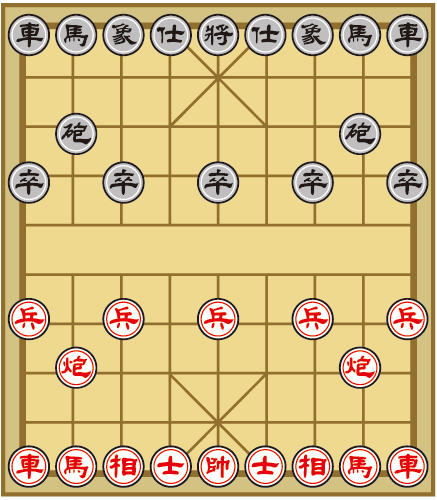
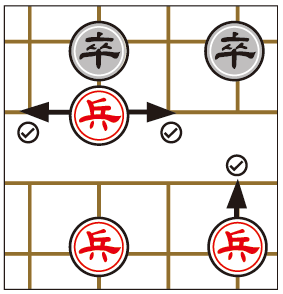
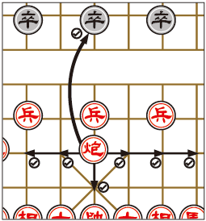
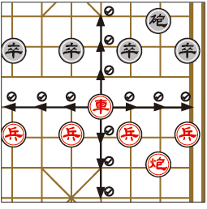
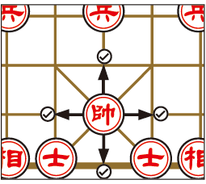
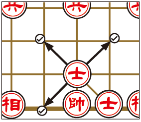
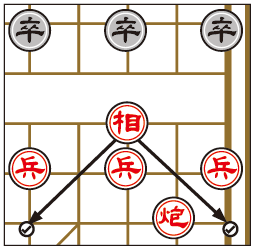
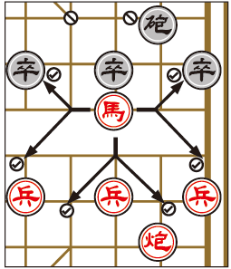

Learn To Play XiangQi / Chinese Chess
Equipment
The board is composed of 9 vertical lines (files) and 10 horizontal lines (ranks) with the pieces being played on the intersections. On each side of the board against the back edge is a palace, which is 3 by 3 lines (9 positions) with four diagonal lines that extend outward from the center forming an “X” shape. Dividing the two opposing sides of the board is a river, located between the fifth and sixth ranks. The river is often marked with the Chinese characters, 楚河 “Chǔ Hé” meaning "Chu River", and 漢界 (汉界 in simplified Chinese), “Hàn Jiè”, meaning "Han border", a reference to the Chu-Han War. Some boards have the starting points of soldiers marked with small crosses.
Arrangment
The starting positions of the pieces are arranged as shown below.

Pieces
The playing pieces are indicated by Chinese characters. The same ranking pieces sometimes have different characters for each side and sometimes are written in either traditional or Chinese characters. The pieces are identified below by English name, Chinese pronunciation, traditional Chinese character, simplified Chinese character if it is different, and then the character variation.







Gameplay
Each side alternates, moving one piece in each turn. Pieces capture by using their normal moves and landing on a point occupied by an enemy piece. Generally, red makes the first move but two players can agree to play otherwise.
Victory is achieved when one player puts the other’s general in checkmate. Checkmate is when the other player’s general is left with no option but to be captured in the next move. When the player’s general is in danger of being captured on the next move, that general is in check, “Jiāng” 將/将，and the player threatening capture announces it.
If a player forces the other player to repeat a move by repeating his move a second time, he must break the cycle with a different move on his next turn.
If a player checks the other player three times in a row in a way that repeats their positions, the checked player must forfeit.